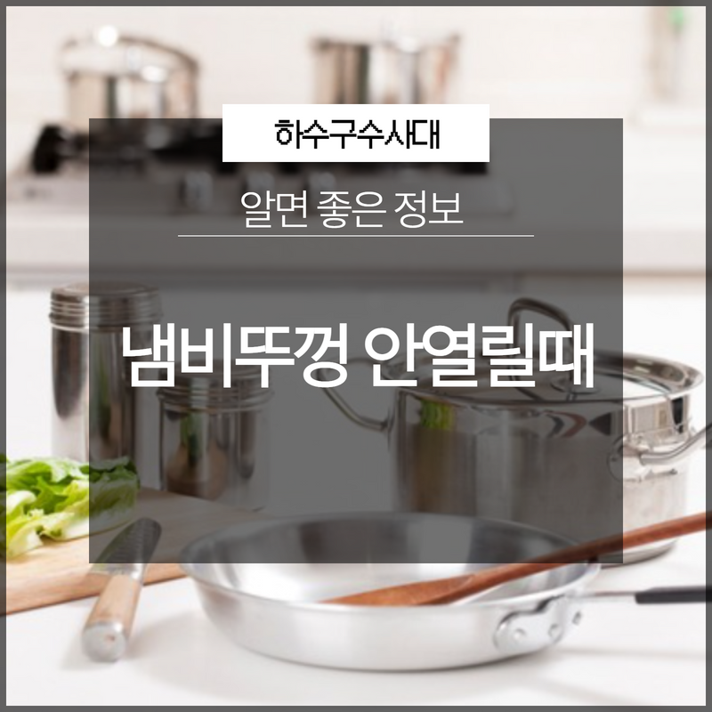
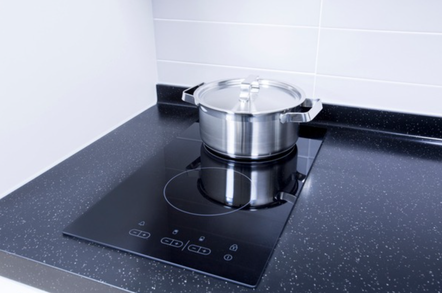
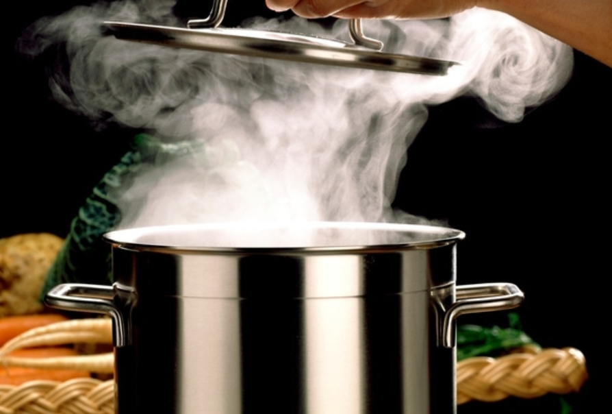
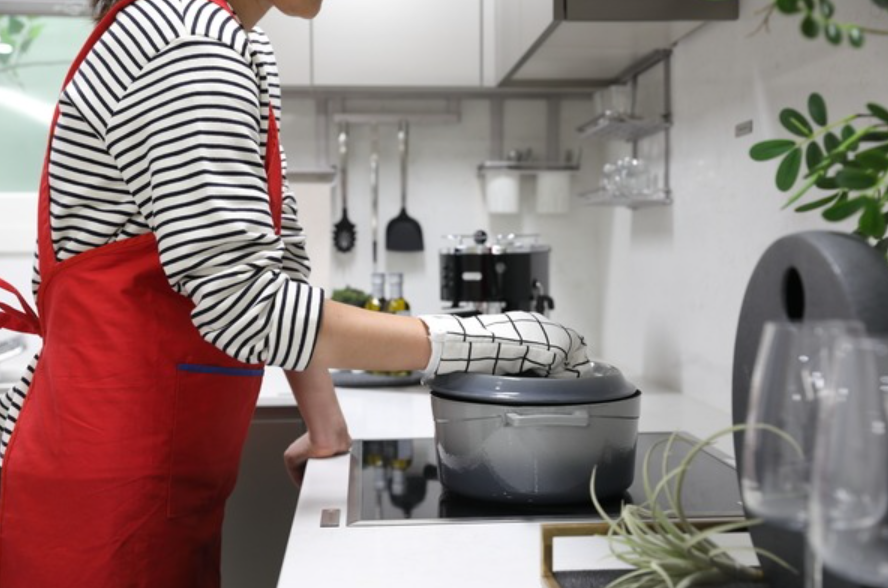
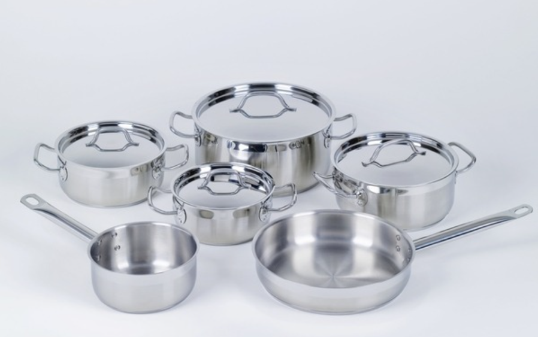
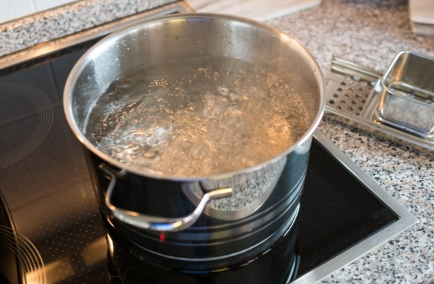
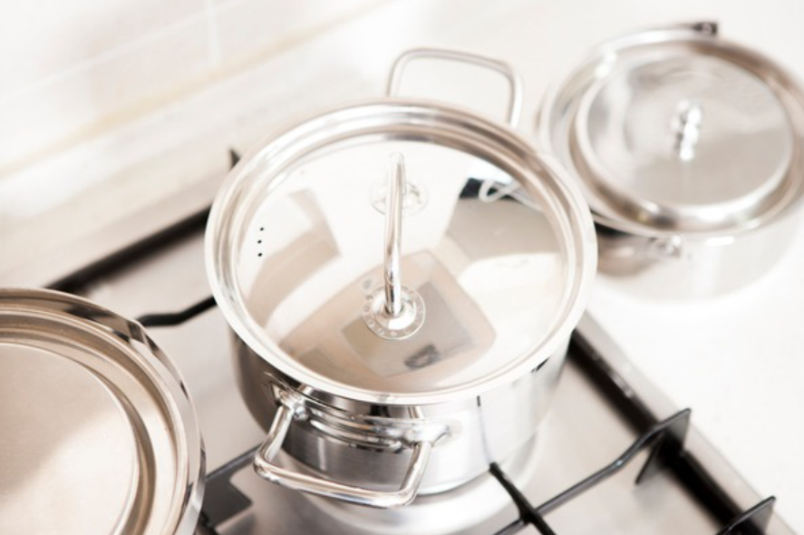

🏠 냄비뚜껑 안열릴때 주변에서 찾기 쉬운 도구로 열 수 있어요.
용인 하수구막힘 전문 시공 후기

📋 작업 개요
- 위치: 용인
- 서비스 유형: 하수구막힘, 악취차단
- 작업 일시: 2023. 4. 14. 12:42
- 업체명: 하수구수사대 (010-5615-2118)
🔍 문제 상황
안녕하세요. 하수구수사대입니다.
매일 주방에서 음식을 하고 집안일을 하고 있는 주부님들의 경우에 알아두면 좋은 꿀팁들이 많이 있습니다. 특히나 음식을 하면서 생각지 못한 상황으로 인해서 당황하게 되는 경우가 있는데요.
하지만 생활 속에서 간단하게 해결할 수 있는 방법을 알고 있다면 여러모로 도움이 될 수 있을 것입니다. 그래서 오늘은 생활 속 도움 되는 정보로 냄비뚜껑 안열릴때 알아두면 좋은 정보에 대해서 알려드리도록 하겠습니다.
가족들의 식사를 준비하기 위해서 매일 찌개를 끓이시는 분들이 있습니다. 찌개나 국 종류 같은 경우 뚜껑을 닫고 끓이는 경우가 많은데요. 뜨거운 상태로 그대로 뚜껑을 닫고 요리를 하다가 막상 먹으려고 했을 때 뚜껑이 열리지 않는 것을 경험해 보신 경우가 있을 것입니다. 이럴 때는 당연히 당황스러운 마음에 억지로 열려고 하다가 뜨거운 열기에 데이거나 다치게 될 수 있습니다.

🔎 원인 분석
💡 전문가 진단: 뚜껑을 열 수 있는 가장 간단한 방법은
냄비뚜껑 안열릴때 사용하면 좋은 몇 가지 꿀팁들이 있습니다.
우선 냄비 뚜껑이 열리지 않게 되는 이유에 대해서 알아보자면 냄비를 뜨거운 열을 이용해서 가열을 할 때 뚜껑을 닫게 되면 외부의 공기를 차단하게 되는 역할을 하게 됩니다. 이때 기체의 부피는 작아지게 되면서 냄비 속의 기압이 떨어지게 되는데요. 이렇게 되면 내부는 진공상태가 되어버리기 때문에 냄비 뚜껑이 열리지 않는 상황이 되는 것입니다.
뚜껑을 열 수 있는 가장 간단한 방법은
바로 냄비의 온도를 내려주는 것인데요. 시간적인 여유가 좀 있는 편이라면 온도가 어느 정도 내려간 다음에 뚜껑을 열 수 있지만 시간적인 여유가 없고 음식이 식고 난 후 다시 먹기가 불편한 경우에는 조금 망설여지게 되는 방법이라고 할 수 있습니다.
이것은 기압차를 이용해서 뚜껑을 여는 방식인데요. 시간이 오래 걸려 답답하신 경우에는 약한 불로 서서히 가열을 해주시거나 뜨거운 물과 찬물을 번갈아가면서 부어주는 방식으로 이용할 수도 있습니다. 냄비뚜껑 안열릴때 앞의 방법 외에도 내부의 압력차를 이용한 방법이 있는데요.

🔧 작업 과정
뜨거운 물과 찬물에 반복적으로 담가주는 것을 해주는 것입니다.
이때는 물이 음식으로 들어가지 않도록 주의하시는 것이 필요한데요. 힘들게 만든 음식이 못 먹게 되지 않도록 주의를 하면서 뜨거운 물과 찬물에 번갈아서 담가주시게 되면 내부 압력차를 통해서 뚜껑이 열리게 될 수 있습니다.
또 이용할 수 있는 방법은
마찰을 이용하는 것인데요. 냄비 뚜껑 주변으로 고무줄을 끼워서 뚜껑을 돌리면서 마찰을 이용해서 오픈을 하는 방식입니다. 이때 고무줄을 여러 개를 겹쳐서 사용을 하시는 것이 더 중요한데요. 고무줄 외에도 주방에서 쉽게 볼 수 있는 고무장갑을 이용하실 수도 있습니다.
고무장갑을 끼워서 뚜껑을 돌리게 되면 미끄럼 방지가 되어 있기 때문에 고무줄보다도 오히려 더 쉽게 사용을 하실 수 있습니다. 하지만 이때 뚜껑이 갑자기 열리게 되면 내부의 뜨거운 증기로 인해서 화상을 입을 수 있기 때문에 이 부분에 주의를 하시는 것이 좋습니다.
숟가락을 이용하는 것도 좋은 방법인데요.
숟가락을 사용해서 살짝 틈을 만들어서 공기가 외부로 빠져나가게 할 수 있도록 만드는 것입니다. 이때 주의할 점은 숟가락에 힘을 너무 많이 주다 보면 숟가락이 휘어지게 될 수 있기 때문에 힘 조절을 잘해서 뚜껑에 틈을 주는 것이 중요합니다. 숟가락이 없는 경우에는 젓가락을 이용해서도 대체를 해볼 수 있는데요.


✅ 작업 완료
이렇게 여러 가지의 꿀팁으로 주변에서 찾기 쉬운 도구들을 이용해서
갑자기 뚜껑이 열리지 않을 때 유용하게 사용해 보시기를 바랍니다.




⚠️ 하수구 배관 막힘 예방 및 관리 가이드
- ✅ 머리카락, 비닐, 물티슈 등 물에 분해되지 않는 이물질은 하수구 유입을 절대 금지해 주세요.
- ✅ 하수구 거름망을 씌우고 모여진 이물질은 주기적으로 쓰레기통에 바로 비워주셔야 합니다.
- ✅ 배관 노후가 심할 경우 이물질이 더 쉽게 걸리므로 주기적인 배관 세척(고압세척 등)을 권장합니다.
- ✅ 작업 후 1년 이내 재발 시 하수구수사대에서 무상 A/S 보증 서비스를 제공합니다.
💡 핵심 정리
- 확실한 장비 작업(내시경 점검 및 샤프트 스케일링)으로 원인을 뿌리 뽑습니다.
- 작업 후 1년 이내에 동일한 부위 재발 시 100% 무상 A/S 서비스를 보장합니다.
- 서울 · 경기 · 인천 전 지역에 24시간 언제든 긴급 출동할 수 있도록 항시 대기 중입니다.
❓ 자주 묻는 질문 (FAQ)
🚨 용인 하수구막힘 문제로 고민이신가요?
정확한 원인 진단과 확실한 시공으로 재발 없는 해결을 약속드립니다.
24시간 긴급 출동 | 서울 · 경기 · 인천 전지역 | 1년 내 재발 시 무상 A/S